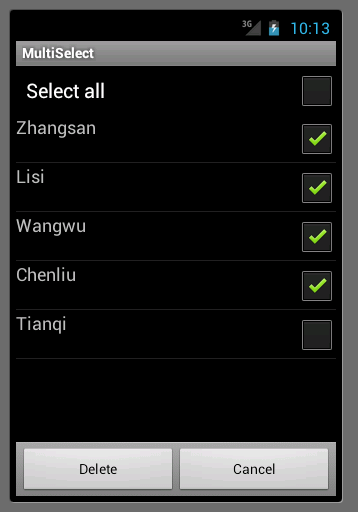

基于ListView和CheckBox实现多选和全选记录的功能
应用开发中经常会有从数据库中读取数据显示，然后选中多条、全部记录并且删除的需求。在做定制系统联系人的时候也遇到这样的需求，下面写个简单的通过ListView和CheckBox实现多选、全选的例子。下面是具体的代码，有问题请留言。代码下载地址：
MultiSelectActivity
public class MultiSelectActivity extends Activity implements OnClickListener,OnItemClickListener {
private static final String TAG = "MultiSelectActivity";
private ListView contactsDelList;
private Button contactsDelBtn;
private Button contactsCancelBtn;
private CheckBox selectAll;
private Cursor cursor;
private ContactsDeleteAdapter contactsDeleteAdapter;
private static final String[] PROJECTION = new String[] { Contacts._ID,
Contacts.DISPLAY_NAME };
private static final int CONTACTS_ID_INDEX = 0;
private static final int DISPLAY_NAME_INDEX = 1;
private ContactsDeleteListItemViews holderViews;
private final class ContactsDeleteListItemViews {
TextView nameView;
CheckBox delCheckBox;
}
@Override
public void onCreate(Bundle savedInstanceState) {
super.onCreate(savedInstanceState);
setContentView(R.layout.contacts_delete_activity);
contactsDelList = (ListView) findViewById(R.id.contacts_delete_list);
contactsDelBtn = (Button) findViewById(R.id.contacts_delete_btn);
contactsCancelBtn = (Button) findViewById(R.id.contacts_cancel_btn);
selectAll = (CheckBox) (findViewById(R.id.contacts_delete_list_header)
.findViewById(R.id.select_all));
contactsDelList.setOnItemClickListener(this);
contactsDelBtn.setOnClickListener(this);
contactsCancelBtn.setOnClickListener(this);
selectAll.setOnClickListener(this);
}
@Override
protected void onResume() {
super.onResume();
refreshData();
}
// 查询数据库
private void refreshData() {
cursor = getContentResolver().query(Contacts.CONTENT_URI, PROJECTION,
null, null, null);
contactsDeleteAdapter = new ContactsDeleteAdapter(this, cursor);
contactsDelList.setAdapter(contactsDeleteAdapter);
}
class ContactsDeleteAdapter extends BaseAdapter {
Cursor cur;
Map<Integer, Boolean> selectedMap;
HashSet<String> delContactsIdSet;
public ContactsDeleteAdapter(Context context, Cursor c) {
cur = c;
// 保存每条记录是否被选中的状态
selectedMap = new HashMap<Integer, Boolean>();
// 保存被选中记录作数据库表中的Id
delContactsIdSet = new HashSet<String>();
for (int i = 0; i < cur.getCount(); i++) {
selectedMap.put(i, false);
}
}
@Override
public View getView(int position, View convertView, ViewGroup parent) {
if (convertView == null) {
convertView = LayoutInflater.from(MultiSelectActivity.this)
.inflate(R.layout.contacts_delete_list_item, null);
holderViews = new ContactsDeleteListItemViews();
holderViews.nameView = (TextView) convertView
.findViewById(R.id.name);
holderViews.delCheckBox = (CheckBox) convertView
.findViewById(R.id.delete_list_item);
convertView.setTag(holderViews);
}
cur.moveToPosition(position);
ContactsDeleteListItemViews views = (ContactsDeleteListItemViews) convertView
.getTag();
final String name = cur.getString(DISPLAY_NAME_INDEX);
views.nameView.setText(name);
views.delCheckBox.setChecked(selectedMap.get(position));
// 保存记录Id
if (selectedMap.get(position)) {
delContactsIdSet.add(String.valueOf(cur
.getInt(CONTACTS_ID_INDEX)));
} else {
delContactsIdSet.remove(String.valueOf(cur
.getInt(CONTACTS_ID_INDEX)));
}
return convertView;
}
@Override
public int getCount() {
return cur.getCount();
}
@Override
public Object getItem(int position) {
if (cur.moveToPosition(position)) {
return cur;
} else {
return null;
}
}
@Override
public long getItemId(int position) {
return position;
}
}
@Override
public void onClick(View v) {
switch (v.getId()) {
case R.id.select_all:
// 全选CheckBox的click事件处理
if (selectAll.isChecked()) {
for (int i = 0; i < contactsDeleteAdapter.getCount(); i++) {
contactsDeleteAdapter.selectedMap.put(i, true);
// click事件：全选checkbox被勾选则把所有的联系人ID添加到delContactsIdSet中
contactsDeleteAdapter.cur.moveToPosition(i);
contactsDeleteAdapter.delContactsIdSet.add(String
.valueOf(contactsDeleteAdapter.cur
.getInt(CONTACTS_ID_INDEX)));
}
contactsDelBtn.setEnabled(true);
} else {
for (int i = 0; i < contactsDeleteAdapter.getCount(); i++) {
contactsDeleteAdapter.selectedMap.put(i, false);
}
// click事件：全选checkbox被取消勾选则把delContactsIdSet清空
contactsDeleteAdapter.delContactsIdSet.clear();
contactsDelBtn.setEnabled(false);
}
contactsDeleteAdapter.notifyDataSetChanged();
break;
case R.id.contacts_delete_btn:
new AlertDialog.Builder(this)
.setTitle(R.string.clearConfirmation_title)
.setMessage(R.string.clearConfirmation)
.setNegativeButton(android.R.string.cancel, null)
.setPositiveButton(android.R.string.ok,
new DialogInterface.OnClickListener() {
@Override
public void onClick(DialogInterface dialog,
int which) {
final ProgressDialog progressDialog = ProgressDialog
.show(MultiSelectActivity.this,
getString(R.string.clearProgress_title),
"", true, false);
final AsyncTask<Void, Void, Void> task = new AsyncTask<Void, Void, Void>() {
@Override
protected Void doInBackground(
Void... params) {
// 删除记录事件处理（我这里就不写详细的代码了）
return null;
}
@Override
protected void onPostExecute(Void result) {
progressDialog.dismiss();
}
};
progressDialog.show();
task.execute();
}
}).setCancelable(true).create().show();
break;
case R.id.contacts_cancel_btn:
// 取消事件处理
break;
}
}
@Override
public void onItemClick(AdapterView<?> arg0, View view, int position,
long id) {
Log.i(TAG, "onItemClick");
ContactsDeleteListItemViews views = (ContactsDeleteListItemViews) view
.getTag();
views.delCheckBox.toggle();
contactsDeleteAdapter.selectedMap.put(position,
views.delCheckBox.isChecked());
contactsDeleteAdapter.notifyDataSetChanged();
// 判断是否有记录没被选中，以便修改全选CheckBox勾选状态
if (contactsDeleteAdapter.selectedMap.containsValue(false)) {
selectAll.setChecked(false);
} else {
selectAll.setChecked(true);
}
// 判断是否有记录被选中，以便设置删除按钮是否可用
if (contactsDeleteAdapter.selectedMap.containsValue(true)) {
contactsDelBtn.setEnabled(true);
} else {
contactsDelBtn.setEnabled(false);
}
}
}
布局文件：contacts_delete_activity.xml
<?xml version="1.0" encoding="utf-8"?><!-- This layout of delete contacts. -->
<LinearLayout xmlns:android="http://schemas.android.com/apk/res/android
android:layout_width="match_parent
android:layout_height="match_parent
android:orientation="vertical" >
<include
android:id="@+id/contacts_delete_list_header
layout="@layout/contacts_delete_list_header" />
<ListView
android:id="@+id/contacts_delete_list
android:layout_width="match_parent
android:layout_height="0dip
android:layout_weight="1" />
<LinearLayout
style="@android:style/ButtonBar
android:layout_width="match_parent
android:layout_height="wrap_content
android:orientation="horizontal" >
<Button
android:id="@+id/contacts_delete_btn
android:layout_width="0dip
android:layout_height="wrap_content
android:layout_weight="1
android:enabled="false
android:text="@string/delete" />
<Button
android:id="@+id/contacts_cancel_btn
android:layout_width="0dip
android:layout_height="wrap_content
android:layout_weight="1
android:text="@string/cancel" />
</LinearLayout>
</LinearLayout>
